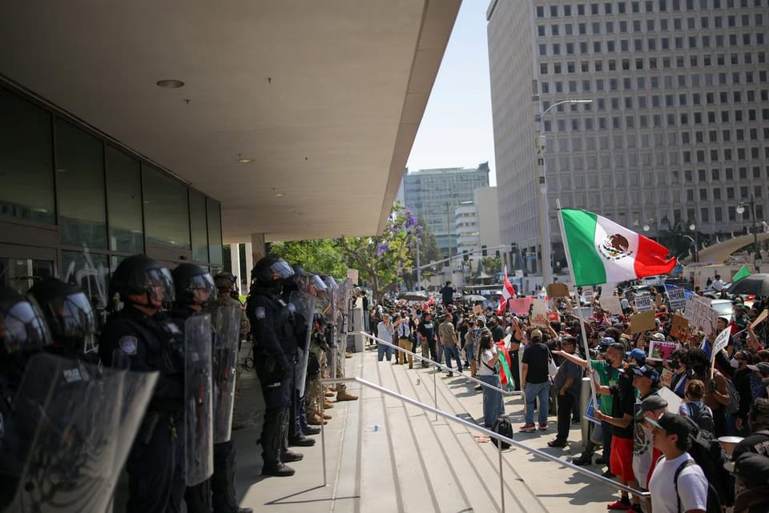

世界苦茶06月10日新闻 | 48条 | 中国五月进出口数据不佳

中国五月进出口数据不佳 | 美国似乎放宽对华EDA工具封锁 | 辽宁舰进入日本专属经济区 | 美军向洛杉矶部署700名海军陆战队
每天三件事：
苦茶数据
美元兑人民币：7.18（昨日7.18，前日7.18）
美元兑日元：144.57（昨日144.43，前日144.93）
上证指数：3384（昨日3393，前日3385）
标普500指数：6005（昨日6000，前日5930）
比特币：109492（昨日105708，前日105545）
布伦特原油：67.49（昨日66.41，前日66.47）
中国新闻
• 辽宁舰现身日本海域 ：日本军方星期天首次通报解放军辽宁舰编队驶入日本西南经济水域，同时表明中国海军可能深入太平洋，并首次被发现在第二岛链以东活动。针对中国海军活动范围扩大，日本内阁秘书长林芳正星期一表示已向北京提出交涉。中国外交部发言人林剑星期一则在例行记者会上回应称，中国军舰在有关海域活动完全符合国际法和国际惯例；中国一贯奉行防御性国防政策，希望日本客观理性看待。日本国防部下辖的统合幕僚监部星期天在官网发布消息称，日本海上自卫队确认，包括中国航母辽宁舰在内的四艘船舰上星期六约下午6时、在南鸟岛西南约300公里的海域航行。 （翻评：这次直接进入了日本的专属经济区。）
• 中方回应辽宁舰巡航 ：针对日本军方指中国辽宁舰编队在日本附近太平洋海域活动，中国外交部回应称，相关情况符合国际法规。中国外交部发言人林剑星期一在例行记者会上说，中国军舰在有关海域活动完全符合国际法和国际惯例，中方一贯奉行防御性国防政策，希望日方客观理性看待。日本日本防卫省统合幕僚监部星期天在官网发布消息称，日本海上自卫队确认，包括中国航母辽宁舰在内的四艘船舰上星期六约下午6时在离南鸟岛西南约300公里的海域航行。
• 郑若骅谈港被袭经历 ：香港律政司前司长郑若骅星期一在北京表示，一些外国和境外势力在香港各个阶层运作，意图干预香港事务，有的是新闻媒体工作者、立法会议员、高校讲师、专业界别等。她指出，这些人不断制造事端，一步步将香港推向2019年的“黑暴”乱象。据香港电台、无线新闻等报道，郑若骅星期一在北京举行的一国两制学术研讨会上致辞时，透露她在2019年11月出访英国简介香港情况时，被人有计划安排在后巷下车，之后被一些在现场等待的暴徒袭击并推倒在地，自己手腕断裂。郑若骅表示，当时香港特区的情况凸显国家安全风险，“港独”、分裂国家、暴力恐怖等违法活动，严重危害国家主权、统一和领土完整。一些外国和境外势力干预香港事务，利用香港从事危害国家安全活动，有必要采取及时行动，确保香港不会变成危害国家安全的根据地。
• 香港餐饮新增国安条款 ：香港食环署向辖下餐厅、食物制造厂、公众娱乐场所等牌照持有人发信，表明将为新签发和续期牌照申请新增国安条件，违者将被吊销牌照。综合无线新闻台和Now新闻台星期天报道，香港食环署近日发布上述信件，不少餐厅持牌人在上月底陆续收到相关信函，指新签发或续期的牌照及许可证申请将加入国家安全元素。香港食环署署长若认为，持牌人、持证人以及任何关连人士或作出不利国安或香港公众利益的冒犯行为，其牌照将被取消。关连人士涵盖董事、管理层、雇员、代理和承办商。 （翻评：香港最近是经济不好了，港府官员又想靠国安话题取悦中央是吧。）
• 中央发文扩保兜底 ：中国官方发文，要求扩大社会保障覆盖面，加强低收入群体兜底帮扶。其中包括完善最低工资标准调整机制，合理提高最低工资标准，以及对符合条件的高校毕业生、就业困难人员等予以社会保险补贴等。据新华社星期一报道，中共中央办公厅、国务院办公厅发布《关于进一步保障和改善民生 着力解决群众急难愁盼的意见》，提出上述要求。根据《意见》，为有效扩大社会保障覆盖面，要全面取消在就业地参加社会保险的户籍限制，对符合条件的高校毕业生、就业困难人员等予以社会保险补贴，支持引导有条件的地方将生育保险生育津贴按程序直接发放给参保人。
• 歼-36最新照片曝光 ：解放军最新的第六代隐形战机歼-36再有新照片流出，新战机静态停泊于基地的正面照，清楚显示机背进气口和并排双座舱。据《星岛日报》星期一报道，网传照片显示，歼-36正面停放在基地内，旁边有工作人员。通过与人员对比，歼-36的机体大小应介于重型战机与战术轰炸机之间。这张首次曝光的歼-36静态正面照，可见新战机并列双座舱设计，中间疑似有支撑柱。机背中央进气口明显巨大，进气口后方向上打开的板子，则疑似是歼-36其中一块减速板。
• 何立峰英会晤推动合作 ：中国副总理何立峰访问英国期间与英国财政部长里夫斯会面时说，中英双方要推动中英经济财金对话成果落地见效，并呼吁保持中英经济关系持续健康稳定发展。据央视新闻报道，作为中英经济财金对话中方牵头人的何立峰，当地时间星期天与对话英方牵头人里夫斯在伦敦会面，就中英经济财金合作和双方共同关心的问题深入交换意见。何立峰说，中英双方应共同努力落实好中国国家主席习近平与英国首相斯塔默重要共识，推动中英经济财金对话成果落地见效，进一步深化经济财金各领域交流与合作，促进实现互利共赢，保持中英经济关系持续健康稳定发展。
• 韩正与古特雷斯会晤 ：中国国家副主席韩正与联合国秘书长古特雷斯会面时说，中国愿同联合国进一步加强合作，践行真正的多边主义。据新华社报道，韩正于当地时间星期一在法国尼斯出席第三届联合国海洋大会期间与古特雷斯会面。韩正说，当前国际形势变乱交织，中国国家主席习近平主席委派他率团出席此次联合国海洋大会，就是要展现中国对多边主义、落实联合国2030年可持续发展议程特别是对联合国工作的坚定支持。
• 陆批美对台军售挑衅 ：针对美国政府据报计划扩大对台军售规模，中国大陆国防部表示坚决反对，并正告民进党，美制武器救不了自己的命，“倚外谋独”注定失败。据央视新闻报道，大陆国防部新闻局副局长、新闻发言人蒋斌在记者会上回应相关问题时说，美国对台湾的军事援助，是由美国和台独势力主导、侵犯大陆核心利益、妄图改变台海现状、推高台海紧张局势的又一起实证，并对此表示强烈不满、坚决反对。他质问：“谁在不顾中方坚决反对一味挑衅？谁又在破坏台海稳定反复拱火滋事？相信世人一目了然。”
• 北大回应韦东奕健康 ：北京大学回应青年学者韦东奕健康问题，称学校充分关心其生活健康，并呼吁公众保护学者专心治学环境。被网民称为“韦神”的北京大学数学科学学院助理教授、研究员韦东奕，上星期五开通个人社交账号，并发布一段介绍自己的短视频。截至星期一，韦东奕账号粉丝量已突破2300万。而视频中韦东奕的缺牙形象和精神状态，引起不少网民担忧。据新华社报道，北京大学数学科学学院负责人星期一表示，学校在尊重韦东奕他本人的意愿和生活习惯的基础上，在工作、生活、医疗等方面都给予了充分的关心，有相应的安排保障。
• 海峡论坛将于福建举行 ：中国大陆国台办宣布，海峡论坛将于6月中旬在福建举办，并称筹备工作进展顺利。台湾政府的大陆委员会此前表示，海峡论坛为大陆对台统战平台，并禁止中央机关人员参与。国台办发言人朱凤莲星期一宣布，第十七届海峡论坛将于6月中旬在福建举办，论坛大会将在星期天召开，集中活动为期一周，论坛主会场设在厦门，福建有关设区市和平潭综合实验区也将举办相关活动。朱凤莲说，本届论坛坚持“民间性、草根性、广泛性”定位，延续“扩大民间交流、深化融合发展”主题，设置基层交流、青年交流、文化交流、经济交流四大板块。目前论坛各项筹备工作稳步推进，进展顺利。
• 人民日报两高层消失 ：香港媒体报道，中共中央机关报《人民日报》官网的“领导介绍“栏目，少了两名高层，分别是人民日报社副社长胡果以及人民日报社编委委员、秘书长余继军。《星岛日报》星期一发表署名“纪晓华“撰写的评论文章称，最近《人民日报》官网“领导介绍”栏目显示少了两名高层，分别是胡果以及余继军。文章也贴出该栏目前后对比的截图，一个有两人都在列，另一个则没有。文章称，暂时不清楚两人的动向。文章没有具体说明胡果和余继军的名字从何时起不在栏目内出现。
• 广东现高温预警百起 ：中国广东在星期天有近百个高温预警生效，其中省会广州的最高气温超过40摄氏度。据中新社报道，广东星期天高温来袭，广州、肇庆、韶关等地最高气温突破36摄氏度，其中广州从化区在下午4时15分录得40.4摄氏度的全市最高气温。气象监测显示，截至下午4时，广东共有96个高温黄色预警信号处于生效中。气象专家说，根据现有气象资料预计，近两日广州天气炎热，最高气温将维持在35摄氏度左右。
• 习近平再会班禅喇嘛 ：第二届特朗普政府首次打“西藏牌”、要求北京立即释放已失踪30年的十一世班禅喇嘛转世灵童根敦确吉尼玛后，中国国家主席习近平时隔10年再接受班禅额尔德尼·确吉杰布拜见，呼吁这名中国政府承认的班禅喇嘛坚决维护中国统一和民族团结。受访学者指出，西藏自治区今年9月迎来成立60周年，美国政府目前希望利用“班禅牌”制约中国，中共高层则以高规格接受班禅拜见，表达对问题的重视，也对西方在敏感节点打西藏牌高度警惕。
亚太印太新闻
• 沈伯洋父被指赚红钱 ：台湾在野的国民党指责，民进党立委沈伯洋的父亲赚取人民币自我矮化。综合台湾《自由时报》和ETtoday新闻云报道，国民党星期一在记者会上称，翻查中国大陆海关总署资料发现，沈伯洋父亲沈土城创立的台湾企业兆亿有限公司，曾以“中国台湾籍”向大陆申请进出口许可。国民党智库副执行长凌涛说，过去几天，沈伯洋自称父亲是中南美洲贸易商，不是中国大陆台商，没有要赚红钱。国民党星期一揭露的官方资料戳破了沈伯洋的谎言。
• 柬泰互限签证期 ：柬埔寨宣布将泰国游客的签证有效期缩短至七天，泰国也做出相应的回应，并计划切断与邻国柬埔寨的电力和互联网服务。《曼谷邮报》报道，泰国外交部发言人尼孔德在星期一下午的新闻发布会上说，柬埔寨缩短了泰国游客的签证有效期。对于经陆路抵达柬埔寨的泰国公民，持护照的泰国公民在柬埔寨的停留时间从14天缩短至七天，持边境通行证的泰国公民的停留时间从15天缩短至七天。
• 日本驱逐舰访马来西亚 ：日本海上自卫队春雨号驱逐舰星期天停靠西马半岛彭亨州关丹丹绒格浪军港。外国军舰访问马来西亚时，一般都停靠半岛西岸港口，较少停靠半岛东岸的关丹。据《星洲日报》报道，春雨号舰长小泽诚星期一礼貌拜会马来西亚海军海军第一军区指挥官巴哈鲁丁少将。第一军区的20名官兵也受邀参访春雨号。小泽诚说，春雨号6月1日从日本佐世保基地启航，星期天停靠关丹港后，星期二将按计划前往亚丁湾与索马里海域，执行反海盗任务。
• 韩日领导人首次通话 ：韩国总统李在明与日本首相石破茂通电话，双方同意构建成熟的双边关系。据韩联社报道，李在明星期一与石破茂通电话，这是李在明上周就任韩国总统以来，韩日领导人首次通话。报道称，通话持续约25分钟，石破茂祝贺李在明就任韩国总统，两人谈及韩日关系发展等话题。
• 韩总统案审理延期 ：韩国总统李在明涉嫌违反选举法案重审推迟，法院将另行择期审理。韩联社报道，首尔高等法院刑事审判庭星期一宣布，决定推迟原定于6月18日举行的李在明涉违反《公职选举法》案重申。庭审日期将择期另行指定。法院根据《宪法》第84条做出推迟重审决定，条文规定，总统在职期间免于受到刑事起诉，除非犯有内乱罪或外患罪。
• 韩六成人支持新总统 ：民调数据显示，约六成韩国民众看好新任总统李在明的施政前景。韩联社报道，民调机构Realmeter星期一发布的一项调查结果显示，58.2%的受访者看好李在明的施政前景，35.5%的受访者持相反意见。这项调查于6月4日至5日，面向全国18周岁以上的1012人进行。
• 台美日退将举行兵推 ：台北政经学院基金会将主办台海防卫兵推，台美日九名退役上将参与。综合台湾《联合报》《中国时报》报道，台北政经学院基金会和平安全研究中心将在星期二至星期三于政大公企中心举行台海防卫兵推，邀请曾在台湾、美国和日本担任过参谋总长的将军，共计九位退役上将，八位中将参加。据介绍，美日各有两位退役上将亲自参与推演和研讨，他们是美国前参谋首长联席会议主席穆伦、前太平洋总司令布莱尔，以及日本前统合幕僚会议幕僚长岩崎茂、和前海上自卫队幕僚长武居智久。其中，穆伦和岩崎茂均担任美日最高指挥军职。台湾五名退役上将李喜明、胡镇埔、廖荣鑫、张冠群和徐衍璞，以及多名资深中将与专家学者将参与兵推。
• 美军基地爆炸4人伤 ：位于日本冲绳县的美军嘉手纳基地发生爆炸，导致四名日本自卫队员受伤。日本共同社报道，冲绳县读谷村的美军嘉手纳空军基地星期一发生爆炸。日本防卫省相关人士说，爆炸地点在基地内的弹药库区域，用于存放哑弹，设施由日方管理。爆炸发生时，日本陆上自卫队的哑弹处理人员正在作业。四名伤者已送院治疗，有消息称他们都受轻伤。冲绳县正在调查详细情况。
科技新闻
• TikTok扩大英投资 ：TikTok星期一宣布，集团计划增加在英国的投资，并创造500个新就业岗位。英国是TikTok在欧洲最大的用户群体。法新社报道，此消息恰逢伦敦科技周开幕。TikTok在一份声明中说：“TikTok今年在英国的员工人数将增至3000人，新增500多个工作岗位。”TikTok还补充说，正在投资建设一个新的伦敦办事处，预计将于明年投入使用，其规模将远远超过其目前的英国总部。
• 英拟AI技能培训750万人 ：英国政府宣布与多家科技巨头合作，为750万名工人提供人工智能技能培训。法新社报道，英国政府正在推行“科技优先”计划，首相斯塔默星期一在首相办公室发布的文件中说，政府与谷歌、微软和亚马逊等业界龙头达成合作，培训750万名员工，科技巨头承诺在未来五年内，向企业免费提供培训材料。培训预计侧重于教授员工使用聊天机器人和大型语言模型，以提高生产力。
• 日研塑料海中可快降解 ：日本研发一种新型塑料，在海水中几小时内即可降解，有望解决海洋塑料污染问题。新型塑料由日本理化学研究所（RIKEN）与东京大学联合开发。研究团队说，比起现有的可降解塑料，新塑料不仅降解速度更快，而且不留下残渣。在东京近郊和光市一实验室里，研究人员将一小块新型塑料投入盐水中，经过约一小时搅拌，塑料完全溶解消失。
• EDA工具近期悄然恢复向部分中国企业开放： 北京时间2025年6月5日晚，中美两国高层举行直接通话后，中国半导体和电子设计自动化战略出现了微妙的变化。据多位中国本土IC设计工程师和公司反馈，此前因美国出口管制而无法访问的新思科技技术支持平台“SolvNetPlus”和Cadence的“支持门户”现已恢复访问。然而，Synopsys 和 Cadence 均未正式披露这一变化。目前尚不清楚此次恢复是否仅适用于特定的、敏感度较低的中国客户，并由此引发了人们对美国可能放松对华技术限制的质疑。
财经新闻
• 5月稀土出口回升 ：中美新一轮贸易谈判即将举行之际，中国官方数据显示，作为中美贸易争端核心之一的稀土5月出口量有所回升。中国海关总署星期一在官网公布的数据显示，中国5月稀土出口5864.6吨，较上月增长23%。彭博社报道称，尽管5月稀土出口量低于去年同期水平，但这一增幅使得年初以来的累计出口量达到2万4827吨，同比增长2.3%。数据未涵盖稀土制成品，包括用于电动马达和硬盘驱动器的高附加值磁体。
• 5月出口放缓，通缩压力增 ：受中美关税战影响，中国5月出口增速继续放缓，尤其是对美出口进一步恶化；中国国内居民消费价格和生产价格指数也双双下跌。受访学者和分析师指出，最新数据显示中国居民消费疲软，企业陷入价格战，通缩压力加剧。但外贸展现出的韧性和核心通胀率上升，为经济潜在转机带来一些希望。中国海关总署星期一发布的数据显示，以美元计，中国5月出口同比增长4.8%，增速低于4月的8.1%，也低于彭博社预测的6%；进口同比下降3.4%，降幅扩大3.2个百分点，为连续第三个月下滑。
• 小红书设港首个海外办 ：香港官方通报，中国大陆人气网络购物和社交平台小红书在香港设立首个境外办公室。据香港政府公报，香港投资推广署上星期六宣布，小红书在香港开设办公室。这是小红书首次在中国大陆以外设立办公室，便于更深度服务境外品牌和用户。小红书当天行香港办公室开幕仪式，香港财政司司长陈茂波担任主礼嘉宾并致辞。他说，小红书落户香港有三方面意义。第一，小红书与香港社群建立更紧密的联系，能为本地商家在产品和服务的设计、行销推广等方面开拓新视角和新渠道；第二，香港作为国际金融、贸易及创科中心，可助力小红书壮大业务，并拓展全球布局；第三，借助香港融通中外的文化特质与全球网络，推动中国优秀的文化和产品走向世界。
• 野村关闭中国分支 ：野村证券将关闭在中国的其中一家分支机构，这家日本证券公司在经历多年亏损后，缩减了其在中国的财富管理业务。彭博社星期一引述知情人士说，野村证券旗下经纪子公司计划在今年年底前关闭其位于浙江的分支机构。野村证券在2021年底宣布开设上述分支机构，当时该公司正努力在中国富人聚居的地区扩张业务。这家日本最大的券商，曾将财富管理视为中国业务增长的关键领域，但在中国领导层推进共同富裕、经济放缓和激烈的竞争背景下，其业务陷入了困境。
• 中国5月乘用车零售同比增13.3%，今年直观价格战稍显“温和” ：中国乘用车市场信息联席分会公布，在国家促消费政策推动下，同时由于外部贸易环境改善，5月车市走势较强，乘用车市场零售193.2万辆，同比增13.3%，较2018年5月181万的最高水平增长6%，呈现超强增长态势。展望6月，乘联分会表示，由于中美贸易谈判取得阶段性较好结果，对近期抢出口的经济增长贡献较好，5月以来国内车市的消费恢复也是较强，6月仍会延续走势。
俄乌战争
• 俄乌战俘交换启动 ：俄罗斯和乌克兰星期一进行战俘交换，交换对象包括25岁以下的战俘和重伤者。路透社报道，双方于6月2日在伊斯坦布尔举行的直接会谈上达成交换协议。双方将交换至少1200名战俘，并送回数千具战死者遗体。乌克兰总统泽连斯基说，乌克兰已接收第一批来自俄罗斯的战俘，完成交换将需要几天时间。
• 俄控第聂伯更多领土 ：俄罗斯当局星期一说，其军队已控制乌克兰中东部第聂伯罗彼得罗夫斯克地区的更多领土。克里姆林宫说，这一地区的战斗部分旨在建立“缓冲区”。路透社报道，据俄罗斯国家媒体引述国防部的消息说，俄罗斯军队“继续向敌方防御纵深推进”，并扩大了其在第聂伯罗彼得罗夫斯克的控制范围。路透社无法独立证实这一战报。乌克兰上周末说，其军队守住了靠近第聂伯罗彼得罗夫斯克东部边境的一段战线。
• 吕特提议北约强化防空 ：北约秘书长吕特将在星期一于伦敦发表的演讲中提出，北约需要将防空和导弹防御能力提升400%，这是本月稍晚在海牙举行的北约峰会的优先事项之一。路透社报道，吕特将在伦敦智库查塔姆研究所发表演讲，指出北约若想保持可靠的威慑和防御能力，需要“将防空和导弹防御能力提升400%”。根据其办公室提供的演讲摘录，吕特指出：“俄乌战争反映了俄罗斯能如何制造空中恐怖，因此我们必须加强保护我们领空的屏障。
• 俄无人机夜袭创纪录 ：乌克兰空军星期一说，俄罗斯夜间向乌克兰发射了创纪录的479架无人机。袭击对乌克兰多个地区造成破坏，但尚未报告人员死亡或大规模伤亡。法新社报道，乌克兰空军说：“敌方空袭了10个地点。”西部城市罗夫诺市长特列季亚克称这是自战争爆发以来这地区遭受的“最大规模袭击”。
• 俄推新海军战略重塑强国 ：俄罗斯总统办公厅官员帕特鲁舍夫说，俄总统普京已批准一项新的海军战略，旨在全面恢复俄罗斯作为世界主要海上强国之一的地位。路透社报道，帕特鲁舍夫在《论据与事实报》星期一发表的采访中，透露这一消息。他表明：“俄罗斯作为世界最大海上强国之一的地位，正在逐步恢复。”帕特鲁舍夫说：“如果没有对海上形势发展、挑战和威胁演变的长远眼光、没有明确俄罗斯海军面临的目标和宗旨，就不可能开展这项工作。”
• 乌军无人机袭俄机场 ：乌克兰空军6月9日称，俄军8日晚至9日凌晨向乌境内发射了479架无人机和20枚不同类型的导弹。截至9日10时30分，乌军共拦截了460架无人机和包括4枚“匕首”高超音速导弹在内的19枚导弹。乌克兰武装部队总参谋部9日表示，乌特种作战部队当天凌晨对俄罗斯下诺夫哥罗德州的萨瓦斯列伊卡军用机场发动袭击。该机场距离俄乌边境约650公里。此外，乌无人系统部队9日凌晨袭击了楚瓦什共和国一家生产导航设备的军工企业。这家企业被至少两架乌无人机击中，随后燃起大火。俄罗斯国防部9日说，俄防空系统夜间在俄多地摧毁和拦截了49架乌克兰无人机。此外，俄军还使用高精度远程空基武器对乌克兰罗夫诺州军用机场实施了大规模打击。俄罗斯与乌克兰9日表示，根据双方2日在伊斯坦布尔达成的共识，双方开始交换首批25岁以下被俘军人。但双方并未透露此次换俘的具体数量。
• 卢卡申科与习共进家宴 ：白俄罗斯副总理受访说，习近平6月4日在中南海会见卢卡申科总统时说：“我的朋友，您和我关系特殊，所以今天我们将举行一次家宴。我的女儿将首次以这种形式与外国领导人共进晚餐。” 习近平当日是在丰泽园纯一斋会见卢卡申科，寒暄说这是第一次在这里招待总统，现在办公室就在隔壁。中国援白俄罗斯国家足球体育场6月7日启用，卢卡申科致开幕词，提议在此为习近平塑像。
其他新闻
• 以军强拦援加沙船 ：以色列军方阻拦前往加沙地带的援助船“玛德琳号”未果后，登船进行拦截，随后接管船只，改道驶向以色列港口。法新社报道，马德琳号悬挂英国国旗，由非营利组织自由船队联盟安排航行，旨在突破以色列封锁，向加沙地带运送婴儿奶粉、面粉和医疗用品等物资。以色列国防部长卡茨星期天下令军方阻止马德琳号抵达加沙，但船上人员誓言继续动员到最后一刻。
• 墨总统吁尊重移民权 ：墨西哥总统辛鲍姆星期一谴责洛杉矶抗议移民突袭期间爆发的暴力事件，并呼吁美国尊重移民权利。法新社报道，辛鲍姆在上午的新闻发布会上说：“我们不赞同以暴力行动作为抗议的形式。”她敦促居住在美国的墨西哥人“和平行动，不要屈服于挑衅”。与此同时，辛鲍姆敦促美国当局确保所有移民程序都“尊重人类尊严和法治”。
• 旧金山反移民示威60人被捕 ：旧金山警方星期天晚间说，旧金山市约有60人在抗议特朗普打击移民政策的示威活动中被捕。法新社报道，旧金山警察局在X上发表一份声明中说，当地时间晚上7时左右，警察正在监视示威活动，突然有人“变得暴力，开始犯下从袭击到重罪破坏等各种罪行”。“在旧金山，个人始终可以自由行使第一修正案赋予的权利，但暴力行为，尤其是针 对旧金山警察局警员的暴力行为，绝不会被容忍。”
• 米莱再批西班牙首相 ：阿根廷总统米莱星期天在马德里的一次活动中，再次侮辱西班牙首相桑切斯。路透社报道，在星期天晚间的马德里经济论坛活动上，米莱呼吁“痛击当地土匪”，他没有直接点名，但无疑指的是桑切斯。桑切斯的办公室拒绝就此事发表评论。
• 意公投移民与劳工议题 ：意大利选民就放宽公民身份规定和加强劳动法举行公投，总理梅洛尼领导的政府反对这两项提案，呼吁民众弃权。法新社报道，意大利选民星期天开始为期两天的公投，就上述两项课题和另外三项提案表决意见。目前，非欧盟成年居民若无婚姻或血缘关系，须在意大利居住10年后才可申请入籍，申请处理过程可能耗时数年。
• 伊朗批美无意解除制裁 ：伊朗官员说，美国最新提出的核协议方案未包含解除对伊朗制裁的内容。伊朗官媒则报道称，伊美核谈判似乎已陷入僵局。法新社报道，伊朗国会议长加利巴夫（Mohammad Bagher Ghalibaf）在伊朗国家电视台星期天播出的视频中说，美国就核协议提出的方案，没有提及解除制裁。他形容这是不真诚的表现，并指责美国试图强加一个德黑兰无法接受的单边协议。加利巴夫说：“这位抱有幻想的美国总统应该明白，如果他真的想要达成协议，就应该改变做法。”
• 自动驾驶车遭纵火 ：美国加利福尼亚州洛杉矶地区的示威活动仍在继续，据媒体报道，现场至少有两辆相信是谷歌母公司旗下的自动驾驶汽车被纵火焚烧。美国有线电视新闻网拍摄的视频显示，在洛杉矶市中心当地时间星期天的示威现场，几辆汽车上喷满涂鸦，其中两辆车子部分被火焰吞噬，冒出滚滚浓烟。据报道，遭焚烧的车辆似乎是由谷歌母公司Alphabet旗下Waymo研发的自动驾驶汽车。Waymo发言人告诉CNN：“我们正在就汽车起火一事与执法部门联系。”
• 多地ICE抗议持续升级 ：洛杉矶等多地反对移民与海关执法局的抗议活动仍在持续。在洛杉矶，抗议者聚集在联邦大厦和大都会拘留中心外，高呼“停止驱逐出境”和“释放他们所有人”。执法部门发出了驱散令，要求抗议者散去。洛杉矶市中心有至少50人在周末被捕；旧金山有约150人被捕；纽约有多人被捕，其中有24人是进入特朗普大厦的抗议者。洛杉矶县格伦代尔市宣布终止与 ICE 的协助关押被拘捕移民合同，将停止使用市警察局设施拘留被捕移民。州长办公室称，目前有约300名加州国民警卫队成员在洛杉矶，另有 1600 人正在当地军械库待命。州长纽森表示他被告知特朗普正准备增派2000名国民警卫队成员。美军北方司令部已动员约700名海军陆战队士兵，保护洛杉矶地区的联邦人员和财产。州长办公室表示，这些士兵并未被部署，指出此举前所未有且毫无必要的。加州总检察长邦塔宣布，将起诉特朗普和国防部长赫格塞思，指控其未经州长请求将加州国民警卫队联邦化的命令滥用了联邦政府的权限，同时违反了美国宪法第十修正案。邦塔还提及赫格塞思无视了纽森取消部署的要求。美国边境事务主管汤姆·霍曼8日曾威胁逮捕加州州长纽森和洛杉矶市长巴斯等阻碍打击非法移民的人。他随后澄清并未呼吁逮捕纽森。但特朗普表示，如果自己是霍曼，将逮捕纽森。纽森指责这是迈向威权主义的一步，是不能逾越的底线。自动驾驶出租车公司Waymo表示，已从洛杉矶市中心撤走了车辆并且暂停特定区域的服务。此前已有5辆Waymo出租车被纵火。服务行业雇员国际工会加州分部主席戴维·韦尔塔9日被保释。
• 美军向洛杉矶部署700名海军陆战队员，特朗普强硬介入态势再升级 ：美国军方将向洛杉矶临时部署约700名海军陆战队员，直到更多的国民警卫队抵达，这标志着总统特朗普对抗议移民政策骚动事件的回应再次升级。加州州长纽森的新闻办公室在 X 上说："升级的程度是完全没有理由的，没有必要的，也是史无前例的。"加州总检察长Rob Bonta在一份新闻稿中说，他的办公室已经提起诉讼，指控特朗普超越了法规赋予他的权力，并要求法院宣布他的行为违法。中国驻洛杉矶总领馆发布安全提示称，洛杉矶地区多地正持续开展执法行动，提醒洛杉矶地区中国公民密切关注官方公告及媒体报道，切实提高安全意识，加强安全防范，远离集会场所、人员聚集区域或治安不佳地区，避免夜间或单独出行。
• 美国卫生与公共服务部长小罗伯特·肯尼迪6月9日将免疫实践咨询委员会的17名成员全部撤职，并将替换为他自己挑选的人： 该委员会就疫苗的安全性、有效性和临床需求为疾控中心提供建议。肯尼迪未给出解职理由，也未透露谁将加入该委员会。但他此前在《华尔街日报》发文称，如果不解职现有成员，特朗普政府将无法在2028年前任命大多数新成员。肯尼迪的举动遭到医生和公共卫生团体的批评。“决心挽救生命”组织指责肯尼迪将委员会政治化，牺牲科学严谨性，破坏公众信任。美国公共卫生协会将肯尼迪的行为称为“政变”，违背了当选承诺。